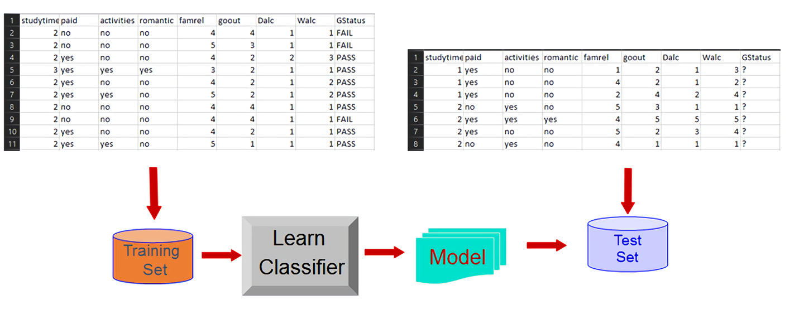

The dataset we chose is the Student Alcohol Consumption dataset by UCI Machine Learning which can be obtained
at Kaggle.
A. Describe the dataset in your own words.
Alcohol is an often abused substance that troubles many individuals in their adulthood as they struggle to cope with emotional and physical stress that
comes with the mantle of adulthood. However, many do not consider the effect of this intoxicating substance in the context of the younger, more
impressionable generation. Therefore, the researchers seek to rectify that lack by conducting a survey to obtain important raw data on alcohol consumption
in a student environment as well as their demographic information and other data that may be of some relevance.
This Student Alcohol Consumption dataset is based on data collected in two secondary schools in Portugal. The students included in the survey were in the
courses of mathematics and Portuguese. The amount of mathematics students involved in the collection was 395, whereas 649 Portuguese Language students were
recorded to have participated. However, the data reveals that there was a total of 382 students that were in both datasets, this was evident in the exact
replication of data. The data collected, in locations such as Gabriel Pereira and Mousinho da Silveira, includes several values of pertinence. Examples of
such data are records of demographic information, grades, and alcohol consumption. The dataset which we will be exploring will be the dataset containing
information about the students from the mathematics course only.
The datasets have a total of 33 attribute columns of which we could do some column selection based on certain parameters. This will be attempted
in section E as part of the preprocessing before plotting the data for our exploratory data analysis. The columns and how they are recorded are as listed below:
school - GP/MS for the student's school
sex - M/F for gender
age - 15-22 for the student's age
address - U/R for urban or rural respectively
famsize - LE3/GT3 for less than or greater than three family members
Pstatus - T/A for living together or apart from parents, respectively
Mjob - 'teacher', 'health' care related, civil 'services', 'at_home' or 'other' for the student's mother's job
Fjob - 'teacher', 'health' care related, civil 'services', 'at_home' or 'other' for the student's father's job
reason - close to 'home', school 'reputation', 'course' preference or 'other' for the choice of school
guardian - mother/father/other as the student's guardian
traveltime - 1(<15mins) / 2(15 - 30 mins) / 3(30 mins - 1 hr) / 4(>1hr) for time from home to school
studytime - 1(<2hrs) / 2(2 - 5hrs) / 3(5 - 10hrs) / 4(>10hrs) for weekly study time
failures - 1-3/4 for number of class failures(if more than 3 than record 4)
schoolsup - yes/no for extra educational support
famsup - yes/no for family educational support
paid - yes/no for extra paid classes for Math or Portuguese
activities - yes/no for extra-curricular activities
nursery - yes/no for whether attended nursery school
higher - yes/no for desire to continue studies
internet - yes/no for internet access at home
romantic - yes/no for relationship status
famrel - 1-5 scale on quality of family relationships
freetime - 1-5 scale on how much free time after school
goout - 1-5 scale on how much student goes out with friends
Dalc - 1-5 scale on how much alcohol consumed on weekdays
Walc - 1-5 scale on how much alcohol consumed on weekend
health - 1-5 scale on health condition
absences - 0-93 amount of absences from school
G1 - 0-20 for the first period grade
G2 - 0-20 for the second period grade
G3 - 0-20 for the final grade
B. What possible insights can be obtained from mining the chosen dataset?
Since the main purpose of the dataset is to find correlations between students with their alcohol consumption patterns, the most conspicuous relationship
would be the relationship between their grades with respect to their workday and weekend alcohol consumption. The traditional
consensus is that students who consume alcohol at high levels tend to skip more classes and perform worse in their studies, thus, resulting in lower
grades. However, a research conducted in the United States by Balsa (2011), showed that increases in levels of alcohol consumption only resulted in small
reductions of GPA. We shall see which consensus holds true. Five columns play a major role in this which are: column 27 (workday alcohol consumption)
and/or column 28 (weekend alcohol consumption), column 31 (first period grade), column 32 (second period grade) and
column 33 (final grade).
For the data exploratory exercise, we choose to examine four columns; workday alcohol consumption, first period grade, second period grade and their final grade.
We chose workday alcohol consumption because drinking over workdays is more unusual than drinking over the weekends. Our explanation would be more focused on the final grade because we think that students will be
more serious towards their final grade rather than the first period grade and second period grade. Thus, their final grade would be the perfect measure of
that particular student's success. However, if more elaborate data mining techniques were to be used, more features can be selected and used in order to
obtain more accurate insights. This will be explained in the next section (Section C).
As we all know, human relationships play a major role in people's lives. It can develop a plethora of emotions in oneself, may it be a positive or negative
emotion. It is a usual train of thought that those who have a bad relationship with their family members will be stressed and unhappy which results in them
drinking alcohol for consolation. We could check to see if that hypothesis has a concrete basis by using column 24 (famrel), column 27 (workday alcohol
consumption) and/or column 28 (weekend alcohol consumption). If the hypothesis holds true, we would expect to see an increasing level of alcohol
consumption (both column 27 and 28) when famrel has a low value. However, the assumption is that the alcohol consumption is high because the student's
relationship with his/her family has a low value. Correlation does not imply causation. This may not hold true because it is a possibility that the
student's relationship with his/her family is low because of their high level of alcohol consumption. For the data exploratory exercise, we choose to examine three columns;
workday alcohol consumption, weekend alcohol consumption and their family relationship.
Besides family relationships, we can also try to find if there is a relationship between being single and consuming high levels of alcohol. To do so, we
need to take column 23 (romantic), column 27 (workday alcohol consumption) and/or column 28 (weekend alcohol consumption) into consideration. Column 23
(romantic), only gives information on whether or not the student has a partner. It does not state the level of intimacy between them. A research conducted
by Dinescu et. al. (2016), studied the relationship between married couples with their single counterparts and found out that if partners are more
intimate, they will drink less. Assuming the romantic relationship in our dataset is of an intimate level, we can find out if this statement holds true.
For the data exploratory exercise, we choose to examine three columns; workday alcohol consumption, weekend alcohol consumption and their relationship status.
Last but not least, we can also obtain insights on health issues and drinking alcohol. In general, we would assume that people who are not healthy, will
avoid drinking in order to prevent their health from further deterioration. To obtain insights on this, we could refer to column 29 (health), column 27
(workday alcohol consumption) and/or column 28 (weekend alcohol consumption). We would think that if the value for health is lower, the value for their
workday and/or weekend alcohol consumption would also be lower. For the data exploratory exercise, we choose to examine three columns; workday alcohol consumption,
weekend alcohol consumption and their health.
C. What type of data mining technique would be relevant?
The data mining technique we think is suitable is classification.
For a student to pass the subject, there are a couple of factors that could be correlated with the outcome. We could take into consideration the
following:
the amount of time a student studies (studytime, column 14)
does the student join any extra paid classes (paid, column 18)
does the student participate in any extra co-curricular activities (activities, column 19)
if the student is involved in any romantic relationship (romantic, column 23)
how is the student's family relationship quality (famrel, column 24)
the tendency of the student to go out with friends (goout, column 26)
weekday alcohol consumption (Dalc, column 27)
weekend alcohol consumption (Walc, column 28)
Figure 1 illustrates the high-level description of our classification.

Figure 1: Using GStatus as the class
We think that classification is the best data mining technique to be employed because we can build a classification model to
predict if a student will get a passing grade based on the factors mentioned above. We can use studytime (column 14), paid (column 18),
activites (column 19), romantic (column 23), famrel (column 24), goout (column 26), Dalc (column 27), Walc (column 28)
as the attributes and GStatus as the class for the training set to predict the class GStatus in the test set and validate the model.
GStatus is derived from the final period grade, (G3, column 33) where according to EuroEducation.net (n.d.),
the passing marks for a student in Portugal would be 10 out of 20. The reason for this change is because it is easier to classify a student's
result as pass/fail rather than a discrete numeric number. This would help the classification model to more accurately predict the class GStatus
because it would be less accurate for the classification model to predict a numeric value ranging from 0-20.
D. Describe data quality issues, and be specific. Identify which attribute (column) has issues, or if the structure of the data has problems.
There are a few columns which we think could be further clarified or changed. They are:
guardian (column 12) - Currently, it is divided into 3 levels which are "mother", "father" and "other". However the part labelled "other"
should be a bit more specific as for the entries where people have placed "other". They should add factors of whether the student is an orphan or
living with their closer relatives.
schoolsup (column 16) - The column name schoolsup with entries "yes" or "no" of which stands for extra educational support is a
little misleading and ambiguous as we do not know if it means the student is receiving extra educational support due to this grades/results or because
the student is from a unwealthy family and is receiving support in terms of food. If it is the latter, it will not have a big impact on grades compared
to the former. Instead, schoolsup should be replaced with a column named scholarship to indicate whether if a student is under the school
scholarship. The value for the attribute should be a simple binary answer such as yes/no.
paid (column 18) - This column is for students with extra paid classes within the course subject which only has yes or no option, it does
not state how many paid classes they took. A proper amendment would be to ask how many extra paid classes they took in a week and have the values
be of an numeric format.
activities (column 19) - This column is for extra-curricular activities that students have participated in and it only has a yes or no option.
There is no indication as to how many extra-curricular the students have taken. A proper way to go about this is to have the column ask how many
extra-curricular activities they took in a week and have the values be of an numeric format.
goout (column 26) - This column is for the amount of time that the student spend to go out with his/her friends. The option given is to state how much
they go out with friends (1 if very low and 5 if very high). This is not a proper measurement unit. It should have been recorded as how many times the student
go out with their friends in a week and the values should be in a numeric format.
Balsa, A. I., Giuliano, L. M., & French, M. T. (2011). The effects of alcohol use on academic achievement in high school. Economics of Education Review, 30(1), 1-15.
Dinescu, D., Turkheimer E., Beam, C.R., Horn, E.E., Duncan, G., Emery, R.E. (2016). Is marriage a buzzkill? A twin study of marital status and alcohol consumption. Journal of Family Psychology, Vol 30(6), Sep 2016, 698-707.
EuroEducation.net. (n.d.). EDUCATION SYSTEM IN PORTUGAL. Retrieved from http://www.euroeducation.net/prof/porco.htm